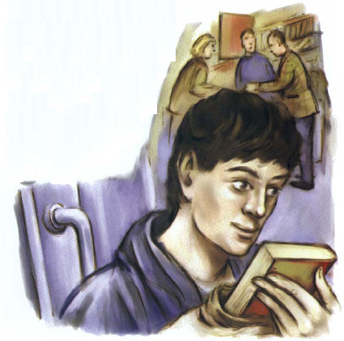
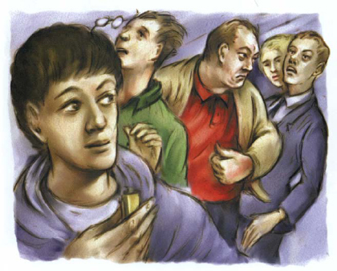
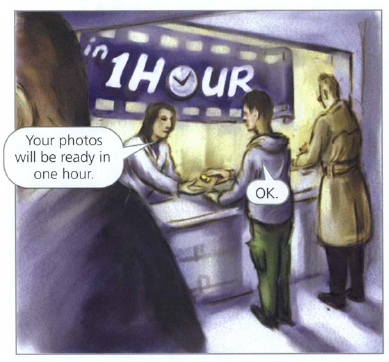
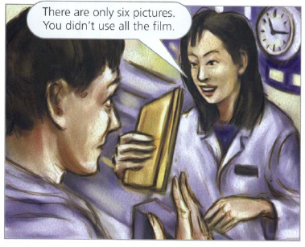
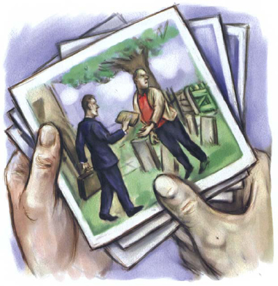

Hôm nay là thứ sáu.
‘Lại một ngày nhàm chán ở trường đại học đây,’ Pete nghĩ. ‘Không có gì thú vị xảy ra với mình cả. Mình muốn có điều gì đó thú vị xảy ra. Mình muốn gặp một cô gái xinh đẹp.’
Hôm nay là một buổi sáng mùa hè mát mẻ. Đường phố của thành phố lớn rất đông đúc. Pete không vội.
‘Mình muốn đọc truyện mới của Stephen King,’ anh nghĩ. ‘Mình sẽ mua ngay bây giờ.’
Anh bước vào một trung tâm thương mại lớn. Trong trung tâm thương mại có một hiệu sách lớn. Pete mua cuốn sách của Stephen King và bước ra khỏi hiệu sách.

Rồi sau đó có điều gì đó thú vị đã xảy ra!
Một cô gái chạy băng qua đám đông trong trung tâm thương mại. Cô chạy đến phía Pete. Cô có mái tóc vàng ngắn và đeo kính tròn nhỏ. Cô rất xinh. Và cô cầm một chiếc máy ảnh trong tay. Nhưng có gì đó không ổn!
Pete chăm chú nhìn mặt cô gái. ‘Cô ấy sợ quá,’ anh nghĩ. ‘Tại sao cô ấy lại sợ?’
Đột nhiên, cô gái chạy đến bên Pete. Cô nhét một thứ gì đó vào tay anh!
Pete bắt đầu lên tiếng. ‘Ê! Gì thế —?’
Nhưng cô gái đã chạy ngay mất. Cô biến mất giữa đám đông.
Pete nhìn thứ ở trong tay mình. ‘Đây là một băng cát-sét,’ anh nghĩ. ‘Tại sao cô ấy lại đưa nó cho mình?’
Một phút sau, Pete nhìn thấy một người đàn ông đang chen qua đám đông. Ông ta rất to lớn và mặc một chiếc áo sơ mi đỏ. Ông ta rất vội và đang tìm kiếm ai đó.
‘Ông ta có đang tìm cô gái đó không?’ Pete tự nhủ. ‘Hay là ông ta đang tìm một thứ gì đó, chứ không phải tìm một người? Ông ta có đang tìm một băng cát-sét không?’
Pete nhanh chóng nhét băng cát-sét vào túi mình.

Khuôn mặt của người đàn ông to bự vừa giận dữ vừa lo lắng. Ông ta nhìn vào mặt những người trong trung tâm thương mại. Ông ta nhìn Pete rất chăm chú. Rồi ông ta vội vã đi mất.
‘Người đàn ông đó đang tìm cô gái đó,’ Pete nghĩ. ‘Tại sao chứ? Cô ấy sợ ông ta. Cô ấy đã đưa băng cát-sét cho mình. Ông ta muốn lấy lại băng cát-sét ư? Thật khó hiểu quá.’
Pete lấy băng cát-sét ra khỏi túi và nhìn lại.
‘Mình có thể giải quyết chuyện này không?’ Anh tự nhủ. ‘Mình sẽ thử! Mình muốn xem có gì trong cuộn phim này.’
Pete đến một cửa hàng bách hóa lớn.

Một giờ sau, Pete lấy ảnh.

Pete trở lại trung tâm thương mại và tìm một chỗ ngồi. Anh ngồi xuống và mở phong bì ảnh. Anh nhìn vào sáu bức ảnh. Ba trong số đó là ảnh cô gái chụp cùng bạn bè. Hai bức ảnh là ảnh một đứa trẻ. Bức ảnh thứ sáu là ảnh chụp hai người đàn ông. Một người cao và gầy. Trong ảnh, người này đang đưa cho người kia một phong bì màu nâu dày.
Người đàn ông kia to lớn. Và anh ta mặc một chiếc áo sơ mi đỏ!
